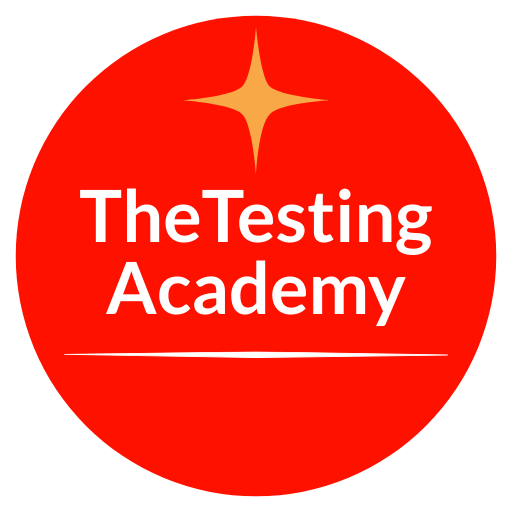

| Key | VWO-1 |
| Summary | VWO practice |
| Issue type | Story |
| Project | VWO (software) |
| Status | To Do |
| Priority | Medium |
| Reporter / Creator | Ajaykumar Chavan |
| Assignee | Unassigned |
| Created / Updated | 2026-11-07 14:02 IST / 2026-11-07 14:02 IST |
| Description | Empty (null) |
| Acceptance criteria | None provided |
| Components / Labels / Fix version / Sprint | None / None / None / None |
| Linked issues / Subtasks / Attachments / Comments | None / None / None / None |
| Estimate / Time spent / Due date | None / None / None |
| Area | Result |
|---|---|
| Clear user story / goal | ❌ Missing — only the title "VWO practice" |
| Testable acceptance criteria | ❌ Missing |
| Happy / negative / boundary paths, state transitions | ❌ Missing |
| Test data, environment, flags, dependencies, preconditions | ❌ Missing |
| Performance, security/roles, a11y, i18n, audit | ❌ Missing |
| Regression impact, compatibility, browser matrix, rollback | ❌ Missing |
| Unambiguous wording, mockups/designs | ⚠️ Title is ambiguous; no designs linked |
| # | Area | Finding | Question to author |
|---|---|---|---|
| G1 | Goal | ❌ No user story; title "VWO practice" is ambiguous | What feature, page or flow in VWO does this story cover? Is it a real feature or a practice/training ticket? |
| G2 | Acceptance criteria | ❌ None | What observable pass/fail conditions define "done"? |
| G3 | Paths | ❌ No happy, negative or boundary behaviour | What are the expected success flows, error states, and limits/empty states? |
| G4 | Roles / permissions | ❌ Not stated | Which user roles can/cannot use it? |
| G5 | Environment & data | ❌ Not stated | Which environment/URL, feature flags, accounts and test data apply? |
| G6 | Dependencies | ❌ No links or integrations | Any dependent tickets, services or integrations? |
| G7 | Non-functional | ❌ Not stated | Any performance, security, accessibility, i18n or audit expectations? |
| G8 | Compatibility | ❌ No browser/device matrix | Which browsers, devices and viewports must be supported? |
| G9 | Regression | ❌ Impact unknown | Which existing features could be affected? |
| G10 | Designs | ❌ No mockups/attachments | Are there designs or specs to reference? |
| G11 | Planning | ❌ No assignee, sprint, fix version, estimate | Who owns it, and which sprint/release and effort apply? |
No acceptance criteria exist, so no functional scenarios are invented. The scenarios below are limited to what can be done now and what each gap blocks. Each maps to a gap.
| ID | Priority | Type | Scenario | Maps to |
|---|---|---|---|---|
| TS-1 | P0 | Clarification | Confirm the ticket scope/goal with the author before any test design begins. | G1, G2 |
| TS-2 | P0 | Review | Review the agreed acceptance criteria for testability (observable pass/fail). | G2 |
| TS-3 | P1 | Pending | Positive, negative and boundary scenarios — to be derived once G3 is answered. | G3 |
| TS-4 | P1 | Pending | Role/permission scenarios — to be derived once G4 is answered. | G4 |
| TS-5 | P1 | Pending | Cross-browser/device checks — to be derived once G8 is answered. | G8 |
| TS-6 | P2 | Pending | Regression of impacted existing features — to be scoped once G9 is answered. | G9 |
| TS-7 | P2 | Pending | Non-functional checks (performance, security, a11y, i18n) — to be scoped once G7 is answered. | G7 |
Not defined — no assignee or team information in the ticket (G11). To be confirmed.
Not defined — no sprint, fix version, due date or estimate in the ticket (G11). To be confirmed.